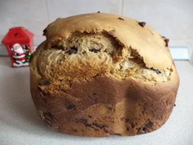

JamieOliver
A massive thank you to @CalEndow & @joffbigrig for the amazing #bigrigtour, teaching communities around California essential cooking skills!
6 Retweets


Explore recipes
More recipes


Ingredient of the month
Turkey
A free-range turkey for your family is not only one of the most eagerly anticipated Christmas treats, but is also the roast that keeps on giving. Jamie has loads of inspirational recipes and leftover ideas for you this Christmas.
What's cooking
Save With Jamie
Jamie's latest book, Save with Jamie, and tie in TV series,
Jamie's Money Saving Meals
, has seen Jamie take you through his favourite tips and tricks to help you "shop smart, cook clever and waste less."
If you missed the series, don't panic, you can catch up on
4OD
or head to our
Save with Jamie
hub for daily tips, inspiration from readers and some of our favourite recipes from the book. It's time to get Kitchen Smart!
Jamie Magazine
Jamie Magazine is an award-winning glossy, jam-packed with new and exclusive recipes, beautifully written features on food & travel as well as gorgeous photographs. Each month Jamie and friends talk you through foodie features, introduce you to new and exciting produce, places and methods and whet your appetite with sumptuous feast ideas and snack suggestions.
Join the Gold Club
Ive recently launched my exclusive Gold Club card so I can love you all more, and make sure you get something extra each time you visit Jamies Italian! Im giving all members complimentary tasters every time they visit, birthday presents, monthly offers, and exclusive rewards when they visit regularly. Sign up now so you dont miss out!
Read moreChristmas blogs
As well as our lovingly-written festive tips , we've got whole host of absolutely fantastic bloggers on board for Christmas this year, including the boys behind YouTube phenomenon SORTED and the superb and widely-read food writer Ren Behan - all alongside our fabulous regulars from Jamie's food team and our editor Jim Tanfield. You need look no further for foodie inspiration this festive season!
See blogsNews & Blogs
More News & Blogs
Leftover Christmas treats and feasts
Published by Food Team
If youre struggling for ideas for what to do with all those leftovers, we've got lots of the ...
Is salmon cool for Christmas?
Published by Matthew Couchman
Ceviche, home-smoked, cured, tartare (to name a few) make this fish come alive, but is it a goo ...
Christmas Eve around the world
Published by Ren Behan
For a large number of countries the big culinary focus and main celebrations of the festive sea ...
Side orders
A home-grown Christmas
Published by Jamie's Gardener
Many accompaniments to the traditional roast are harvestable now but some peaked early, and for ...
Cooking with kids: gingerbread houses
Published by Food Team
Gingerbread is the perfect thing to bake with kids. Its easy to make, and the real fun start ...
Samsung Smart Oven Christmas Loaf
Published by Jim Tanfield
Pannetone can be a really time-consuming process and I havent even got a pannetone tin, so w ...
Christmas brunch ideas
Published by Ren Behan
The festive period is the perfect time to set aside a morning to kick back, relax and treat you ...
Latvia: Europes hidden culinary gem
Published by Kevin Carr
The last couple weeks I've been running through Estonia, Latvia and Lithuania, and the standard ...
Nutritional survival guide to Christmas
Published by Food Team
If you dont fancy following the latest fad diet in the New Year but want to still enjoy your ...
Battle of the bubbles
Published by Honey Spencer
Ever wished that you knew which kind of bubbles to buy for Christmas? Well, here's the simple g ...
Jamie and Tefals 10th anniversary
Published by JamieOliver.com
Birthdays seem to come around so fast, and heres one that crept up on us all. ...
Gluten-free Christmas gingerbread
Published by Jody Vassallo
Because ginger is so warming, nourishing and health-inducing it seems only fitting that gingerb ...
Classic Christmas sauces
Published by Ren Behan
A rich-tasting gravy or a sauce on the side can make all the difference to your Christmas meal. ...
Little Oliver and his brilliant cookbook
Published by JamieOliver.com
Jamie has given his full support to a beautiful new cookbook which aims to raise awareness abou ...
Jamies Festive Feasts on TV
Published by JamieOliver.com
The programme will be shown on Channel 4, December 30th at 8pm. ...
Christmas for the fishmonger
Published by Matthew Couchman
Christmas is a torrid time for the humble fishmonger, so your sudden urge to have a wild sea ba ...

Union Coffee a roast for winter
Published by Merlin Jobst
If you were looking for the perfect gift for your coffee-loving friends and family members, loo ...
Kids cook-off in East London
Published by JamieOliver.com
Jamies Ministry of Food Stratford has been helping to spread the message of good food with a ...
Coping with food intolerance at Christmas
Published by Food Team
With some forward planning and clever tweaking of recipes, no one should feel like they are mis ...
Gold medlars
Published by Jamie's Gardener
The medlar cleanly scoops the prize for most esoteric harvest this week. ...

Our best beers for Christmas
Published by Craft Beer Channel
If a quiet moment with a warm fire and cold beer isnt not to your taste, youre mad. ...
Festive baking tips
Published by Food Team
The best advice for incredible baking this festive season, even if you haven't been organised e ...
The right stuff when it comes to the white stuff
Published by JamieOliver.com
Only the cream of the crop is used in Jamie's restaurants. ...
Festive alternatives to turkey
Published by Steve West
Hard to believe as it is, not everybody likes Turkey, or needs such a large bird. So what are t ...
Nordic food with Herman Rasmuson at Ja Ja Ja Festival
Published by People We Love
We meet the Swedish chef at the Nordic festival in Camden, London, to discuss his role in the g ...
Top 10 Christmas gifts from Jamies world
Published by JamieOliver.com
Weve picked out beautiful gifts from Jamies world to spread the love of great food and wo ...
A Christmas gem in Cumbria
Published by Jim Tanfield
Overwater is neither trying to hide its Georgian roots nor leave it to crumble at the seams; it ...
Christmas grub at Beech House
Published by Jim Tanfield
This is part 2 of my Cumbrian Christmas road trip ...
Side orders

Waiting for Christmas!
Published by Madalina_B on 2013.12.24
I wish you all merry christmas and a happy new year! :)[b][/b][i][/i] ...
Baked Alaska vs. Christmas Pudding?
Published by katherinefrelon on 2013.12.24
How about Baked Alaska instead of Christmas pudding? 1) Sponge base 芒 razz up 45 secs in ...
Jewelled Cranberry Sauce Recipe
Published by katherinefrelon on 2013.12.24
When gathered around the Christmas table, the craberry sauce may not always be the center of at ...